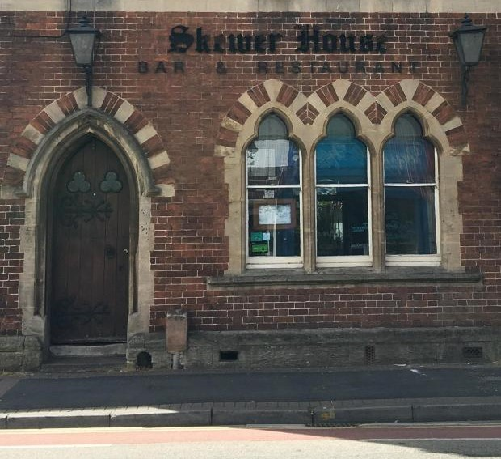
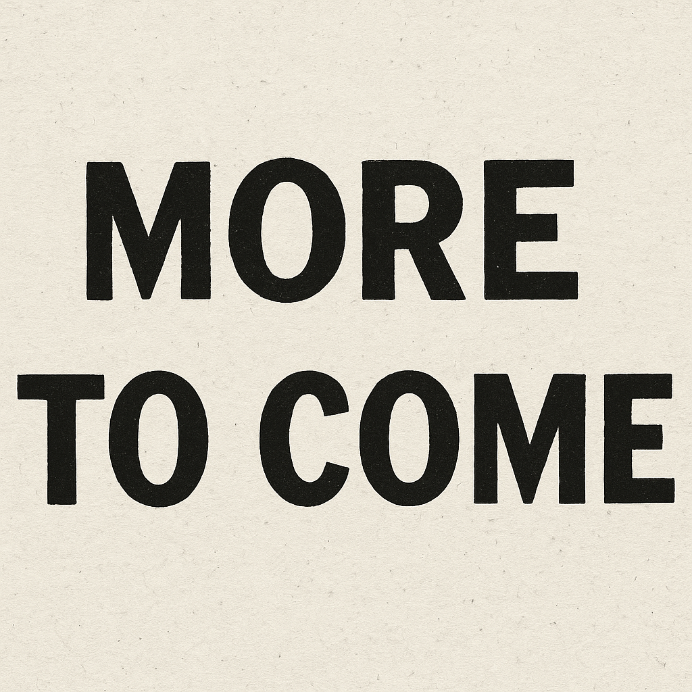

Sam Marsh
Aspiring digital tech professional passionate about software development and creative problem-solving.

For the Skewer House website project, I redesigned the front-end to improve user experience, accessibility, and mobile responsiveness. The purpose of this redesign was to create a more visually appealing, user-friendly, and modern website that better reflects the restaurant’s brand and makes it easier for customers to browse the menu, find contact information, and book a table. I implemented a mobile-first approach, added interactive features like a carousels and improved the footer and navigation layout to enhance usability across devices.
